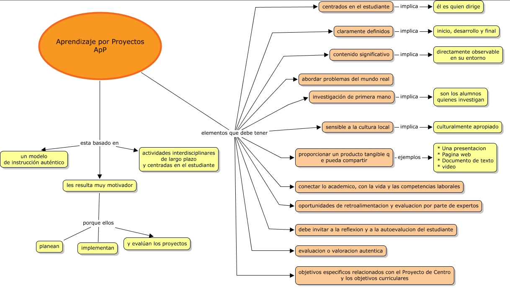

Proyectos
- 
 Proyectos
Proyectos
El proyecto como técnica de evaluación se asemeja mucho a las condiciones de la realidad profesional, en donde el cliente determina si el producto o servicio ofrecido cubrió o no sus expectativas.
Los proyectos son productos realizados por los estudiantes en un tiempo determinado que permiten evaluar tanto los conocimientos adquiridos como la capacidad de aplicación y de asumir responsabilidades, tomar decisiones y satisfacer sus intereses individuales.
Organizar un debate sobre un tema de interés general, grabar un programa de radio, producir una gaceta literaria o científica son proyectos que ayudan a los estudiantes a dar sentido a lo que aprenden, a resolver problemas concretos y a compartir sus resultados con los compañeros y con la comunidad, ya que ésta puede verse beneficiada del conocimiento que se genera en la escuela.
El proyecto puede realizarse de forma individual o grupal; lo importante es que se hagan explícitos el propósito del proyecto, su relación con las competencias que se están desarrollando, la orientación sobre los materiales y/o recursos e información que necesitarán y el tiempo que se dispone.
Cabe señalar que, cuando el profesor observe que los alumnos tienen dificultades sobre algún contenido será necesario desarrollar secuencias didácticas específicas; es decir, realizar una serie de actividades con la finalidad de que los alumnos comprendan el conocimiento que requieren para continuar desarrollando el proyecto, por ejemplo, si el maestro observa dificultades en los alumnos para citar textualmente la información que recopilan, puede dedicar un tiempo a abundar sobre la importancia de distinguir entre lo que dice un autor y la propia opinión, a la forma de citar textualmente, etcétera.
Lo importante es que , el maestro es quien decide en que momento se requiere diseñar una secuencia didáctica para retroalimentar a los alumnos; no obstante, la duración de una secuencia didáctica dependerá de los contenidos y del alumnado.
Calificación
Al calificar un proyecto, es necesario evaluar el desarrollo del proyecto y no únicamente el producto final. Para ello, deberá tomar en cuenta los subproductos realizados por los estudiantes a lo largo del proyecto, como por ejemplo, borradores de texto, exposiciones, debates, resúmenes, entre otros y la calidad y cantidad de fuentes de información consultadas por los alumnos.
Así mismo, deberá evaluar el progreso de los estudiantes en la redacción de los productos y subproductos, así como su participación en los mismos.
La evaluación del proyecto deberá orientarse principalmente a la calidad del producto y/o la calidad de la presentación. Por ejemplo, una presentación en un foro de discusión tendría los siguientes criterios de evaluación: Comprensión de los contenidos o del tema, aplicación a situaciones específicas, análisis comparativo entre lo que ocurre en la realidad y lo que se propone en la teoría, claridad y manejo de la información.
En cambio, un producto podría tener los siguiente criterios: Economía, estética, creatividad y factibilidad del producto.
En ambos casos es necesario que el profesor haga explícitos los criterios de evaluación que utilizará a fin de que estudiante asuma la responsabilidad de su ejecución y sus resultados y retroalimente al estudiante para que aprenda de su desempeño.